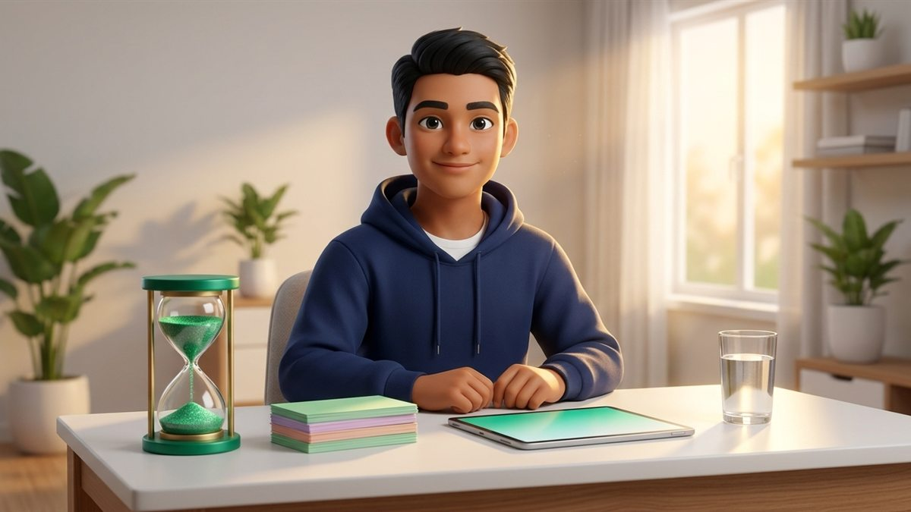

Tips Menjawab Exam, Persediaan & Pesan Mesra Cikgu SPM
Assalamualaikum dan salam sejahtera anak-anak SPM. Ruangan ini menghimpunkan panduan teknik menjawab mengikut skema pemeriksa, senarai semak malam sebelum dewan, dan strategi ulang kaji tenang terus di telefon kamu.
Panduan & Artikel Pilihan Pelajar (4 Panduan)

Cara Guna Skema Jawapan Trial SPM Supaya Markah Naik
Assalamualaikum dan salam sejahtera anak-anak calon SPM 2026. Cikgu perasan ramai pelajar sudah menjawab lima hingga sepuluh set kertas percubaan negeri, namun markah Kertas 2 masih melekat di takuk sama. Selalunya punca utama datang daripada tabiat membuka fail skema PDF terlalu awal sebelum sempat memerah ingatan.
Checklist Malam Sebelum Exam SPM (Pesan Mesra Cikgu)
Hai adik-adik calon SPM 2026. Malam sebelum kertas peperiksaan bermula memang terasa mendebarkan, apatah lagi bila tengok buku teks masih terbuka di atas meja. Cikgu nak pesan, malam ini ialah masa untuk memastikan semua kelengkapan dewan siap dan minda mendapat rehat yang cukup.

Tips Jawab Sejarah & Sains SPM 2026 Elak Markah Bocor
Salam sejahtera anak-anak calon SPM. Menjelang kertas Sejarah (30 Nov) dan Sains (3 Dis), Cikgu kongsikan teknik menjawab Kertas 2 yang paling kerap menyelamatkan calon daripada kehilangan markah mudah.

Strategi Pecutan Akhir SPM: Ulang Kaji 45 Minit Tanpa Stres
Hai geng SPM. Bila kertas peperiksaan bertulis sudah berjalan hampir setiap hari, masa terasa bergerak sangat laju. Cikgu faham perasaan cemas melihat nota tebal yang masih belum habis dibaca, jadi mari tukar cara belajar kepada blok fokus yang lebih tenang.